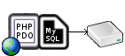

Database Abstraction Layers
Rather than using a native database API, most applications are written using a database abstraction layer that loads a database-specific driver at runtime.
For example, a PHP app might be written to use PDO and be configured to load a MySQL/MariaDB driver at runtime to talk to a MySQL/MariaDB database.

The same PHP app could be configured to load the SQL Relay driver to talk to MySQL/MariaDB via SQL Relay.

SQL Relay currently provides drivers for ADO.NET, PHP PDO, Python DB-API, Perl DBI, ODBC, and JDBC.


Programming guides with sample code and API references are available for each database abstraction layer:
|
|
The native SQL Relay client API is actually a database abstraction layer as well. A program written using the native SQL Relay client API can talk to any database supported by SQL Relay.